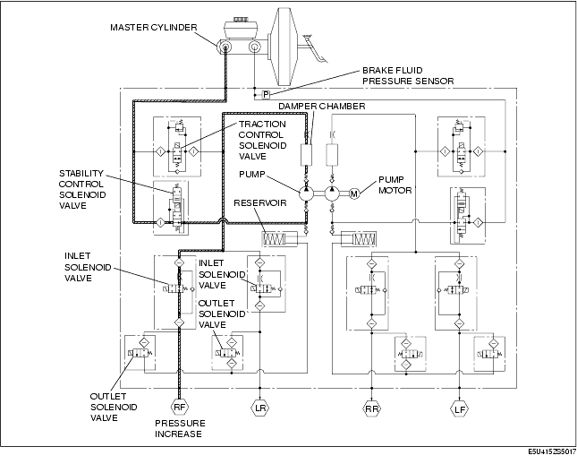

Technical Guide ➭ BRAKES ➭ DYNAMIC STABILITY CONTROL ➭ DSC HU PART CONSTRUCTION/OPERATION
DSC HU PART CONSTRUCTION/OPERATION
id041500100900
{: #wp1059778}
Construction
Function of main component parts
|
Function {: #wp1059861} |
|
|---|---|
|
Inlet solenoid valve {: #wp1059801} |
• Adjusts the fluid pressure in each brake system according to DSC HU/CM signals. {: #wp1059803} |
|
Outlet solenoid valve {: #wp1059876} |
• Adjusts the fluid pressure in each brake system according to DSC HU/CM signals. {: #wp1059879} |
|
Stability control solenoid valve {: #wp1059883} |
• Switches the brake hydraulic circuits during and according to normal braking, ABS and EBD control, TCS control and DSC control. {: #wp1059886} |
|
Traction control solenoid valve {: #wp1059958} |
• Switches the brake hydraulic circuits during and according to normal braking, ABS and EBD control, TCS control and DSC control. {: #wp1059961} |
|
Reservoir {: #wp1059983} |
• Temporarily stores brake fluid from the caliper piston to ensure smooth pressure reduction during ABS and EBD control, TCS control and DSC control. {: #wp1059986} |
|
Pump {: #wp1060008} |
• Returns the brake fluid stored in the reservoir to the master cylinder during ABS and DSC control. {: #wp1060011} • Increases brake fluid pressure and sends brake fluid to each caliper piston during TCS control and DSC control. {: #wp1060035} |
|
Pump motor {: #wp1060043} |
• Operates the pump according to DSC HU/CM signals. {: #wp1060046} |
Hydraulic circuit diagram
Operation
During normal braking
• During normal braking, the solenoid valves are not energized and all of them are off. When the brake pedal is depressed, brake fluid pressure is transmitted from the master cylinder, through the traction switch and inlet solenoid valves, and then to the caliper piston.
**Solenoid valve operation table
+-------------------------------------------------------------------------------+--------------------------------------------------------------------------------+-----------------------------------------------------------------------------------------------------------------+------------------------------------------------------------------------------------------------------------------+-------------------------------------+ | Traction control solenoid valve {: #wp1060465} | Stability control solenoid valve {: #wp1060469} | Inlet solenoid valve {: #wp1060473} | Outlet solenoid valve {: #wp1060481} | Pump motor, pump {: #wp1060489} | +====================================================+==========================+=====================================================+==========================+=========================================+=======================+=======================+=======================+==========================================+=======================+=======================+=======================+=====================================+ | LF-RR {: #wp1061088} | RF-LR {: #wp1061091} | LF-RR {: #wp1061094} | RF-LR {: #wp1061097} | LF {: #wp1061100} | RF {: #wp1061103} | LR {: #wp1061106} | RR {: #wp1061109} | LF {: #wp1061112} | RF {: #wp1061115} | LR {: #wp1061118} | RR {: #wp1061121} | | +----------------------------------------------------+--------------------------+-----------------------------------------------------+--------------------------+-----------------------------------------+-----------------------+-----------------------+-----------------------+------------------------------------------+-----------------------+-----------------------+-----------------------+-------------------------------------+ | OFF (open) {: #wp1060143} | OFF (closed) {: #wp1060201} | OFF (open) {: #wp1060207} | OFF (closed) {: #wp1060219} | Stopped {: #wp1060231} | +-------------------------------------------------------------------------------+--------------------------------------------------------------------------------+-----------------------------------------------------------------------------------------------------------------+------------------------------------------------------------------------------------------------------------------+-------------------------------------+**{: #wp1060135}
Hydraulic circuit diagram
During ABS and EBD control
• During ABS and EBD control, when wheel lock-up is about to occur, the traction switch and stability control solenoid valves are not energized, and the inlet and outlet solenoid valves are energized and controlled in three pressure modes (increase, reduction or maintain), thereby adjusting brake fluid pressure. Brake fluid during pressure reduction is temporarily stored in the reservoir and afterwards the pump motor operates the pump to return the fluid to the master cylinder. (The following figure shows these conditions: right front wheel pressure increased, left front wheel pressure maintained, and both rear wheels pressure decreased.)
**Solenoid valve operation table
+-----------------------------------------------+-------------------------------------------------------------------------------+--------------------------------------------------------------------------------+-----------------------------------------------------------------------------------------------------------------+------------------------------------------------------------------------------------------------------------------+-------------------------------------+ | | Traction control solenoid valve {: #wp1061639} | Stability control solenoid valve {: #wp1061643} | Inlet solenoid valve {: #wp1061647} | Outlet solenoid valve {: #wp1061655} | Pump motor, pump {: #wp1061663} | +===============================================+====================================================+==========================+=====================================================+==========================+=========================================+=======================+=======================+=======================+==========================================+=======================+=======================+=======================+=====================================+ | | LF-RR {: #wp1062331} | RF-LR {: #wp1062334} | LF-RR {: #wp1062337} | RF-LR {: #wp1062340} | LF {: #wp1062343} | RF {: #wp1062346} | LR {: #wp1062349} | RR {: #wp1062352} | LF {: #wp1062355} | RF {: #wp1062358} | LR {: #wp1062361} | RR {: #wp1062364} | | +-----------------------------------------------+----------------------------------------------------+--------------------------+-----------------------------------------------------+--------------------------+-----------------------------------------+-----------------------+-----------------------+-----------------------+------------------------------------------+-----------------------+-----------------------+-----------------------+-------------------------------------+ | During Pressure increase mode {: #wp1061291} | OFF (open) {: #wp1061293} | OFF (closed) {: #wp1061352} | OFF (open) {: #wp1061358} | OFF (closed) {: #wp1061370} | Stopped {: #wp1061382} | +-----------------------------------------------+-------------------------------------------------------------------------------+--------------------------------------------------------------------------------+-----------------------------------------------------------------------------------------------------------------+------------------------------------------------------------------------------------------------------------------+-------------------------------------+ | During pressure maintain mode {: #wp1061726} | OFF (open) {: #wp1061729} | OFF (closed) {: #wp1061735} | ON (closed) {: #wp1061741} | OFF (closed) {: #wp1061753} | Stopped {: #wp1061765} | +-----------------------------------------------+-------------------------------------------------------------------------------+--------------------------------------------------------------------------------+-----------------------------------------------------------------------------------------------------------------+------------------------------------------------------------------------------------------------------------------+-------------------------------------+ | During pressure reduction mode {: #wp1061769} | OFF (open) {: #wp1061772} | OFF (closed) {: #wp1061778} | ON (closed) {: #wp1061784} | ON (open) {: #wp1061796} | Operating {: #wp1061808} | +-----------------------------------------------+-------------------------------------------------------------------------------+--------------------------------------------------------------------------------+-----------------------------------------------------------------------------------------------------------------+------------------------------------------------------------------------------------------------------------------+-------------------------------------+**{: #wp1061283}
Hydraulic circuit diagram
During DSC control (suppress oversteer tendency)
• When a large oversteer tendency is determined, the traction switch and the stability control solenoid valves are energized, switching the hydraulic circuits. At the same time, the pump motor is actuated to operate the pump, supplying brake fluid pressure from the reservoir to the outer front wheel cylinder. Also at this time, the inlet solenoid valve of the inner rear wheel is energized and the hydraulic circuit of this wheel is closed. {: #wp1062635}• After a pressure increase, brake fluid pressure is adjusted using the three pressure modes (reduction, maintain, increase) so that the target wheel speed is obtained. (The following figure shows a left turn (during pressure increase mode).)
**Solenoid valve operation table
+-----------------------------------------------+--------------------------------------------------------------------------------------------------+------------------------------------------------------------------------------------------------+---------------------------------------------------------------------------------------------------------------------------------------------------------------------------------+---------------------------------------------------------------------------------------------------------------------------------------------------------------------------------+-------------------------------------+ | | Traction control solenoid valve {: #wp1063015} | Stability control solenoid valve {: #wp1063019} | Inlet solenoid valve {: #wp1063023} | Outlet solenoid valve {: #wp1063031} | Pump motor, pump {: #wp1063039} | +===============================================+====================================================+=============================================+=====================================================+==========================================+============================================+===========================================+============================================+===========================================+=============================================+==========================================+=============================================+==========================================+=====================================+ | | LF-RR {: #wp1063707} | RF-LR {: #wp1063710} | LF-RR {: #wp1063713} | RF-LR {: #wp1063716} | LF {: #wp1063719} | RF {: #wp1063722} | LR {: #wp1063725} | RR {: #wp1063728} | LF {: #wp1063731} | RF {: #wp1063734} | LR {: #wp1063737} | RR {: #wp1063740} | | +-----------------------------------------------+----------------------------------------------------+---------------------------------------------+-----------------------------------------------------+------------------------------------------+--------------------------------------------+-------------------------------------------+--------------------------------------------+-------------------------------------------+---------------------------------------------+------------------------------------------+---------------------------------------------+------------------------------------------+-------------------------------------+ | During pressure increase mode {: #wp1062667} | ON {: #wp1062669} (closed) {: #wp1063856} | OFF {: #wp1062728} (closed) {: #wp1063867} | ON {: #wp1062731} (open) {: #wp1063878} | ON {: #wp1062734} (closed) {: #wp1063889} | OFF {: #wp1062737} (open) {: #wp1063900} | ON {: #wp1062740} (closed) {: #wp1063911} | OFF {: #wp1062743} (open) {: #wp1063922} | OFF (closed) {: #wp1062746} | Operating {: #wp1062758} | +-----------------------------------------------+----------------------------------------------------+---------------------------------------------+-----------------------------------------------------+------------------------------------------+--------------------------------------------+-------------------------------------------+--------------------------------------------+-------------------------------------------+---------------------------------------------------------------------------------------------------------------------------------------------------------------------------------+-------------------------------------+ | During pressure maintain mode {: #wp1063102} | OFF {: #wp1063105} (open) {: #wp1063948} | OFF {: #wp1063108} (closed) {: #wp1063959} | OFF (closed) {: #wp1063111} | OFF {: #wp1063117} (open) {: #wp1063975} | ON (closed) {: #wp1063120} | OFF (closed) {: #wp1063123} | ON {: #wp1063126} (open) {: #wp1063996} | OFF (closed) {: #wp1063129} | Operating {: #wp1063141} | +-----------------------------------------------+----------------------------------------------------+---------------------------------------------+------------------------------------------------------------------------------------------------+--------------------------------------------+-------------------------------------------+--------------------------------------------+-------------------------------------------+---------------------------------------------+------------------------------------------+---------------------------------------------+------------------------------------------+-------------------------------------+ | During pressure reduction mode {: #wp1063145} | OFF {: #wp1063148} (open) {: #wp1064022} | OFF {: #wp1063151} (closed) {: #wp1064033} | OFF (closed) {: #wp1063154} | OFF {: #wp1063160} (open) {: #wp1064049} | ON (closed) {: #wp1063163} | OFF (closed) {: #wp1063166} | ON {: #wp1063169} (open) {: #wp1064070} | OFF {: #wp1063172} (closed) {: #wp1064081} | ON {: #wp1063175} (open) {: #wp1064092} | OFF {: #wp1063178} (closed) {: #wp1064103} | ON {: #wp1063181} (open) {: #wp1064114} | Operating {: #wp1063184} | +-----------------------------------------------+----------------------------------------------------+---------------------------------------------+------------------------------------------------------------------------------------------------+--------------------------------------------+-------------------------------------------+--------------------------------------------+-------------------------------------------+---------------------------------------------+------------------------------------------+---------------------------------------------+------------------------------------------+-------------------------------------+**{: #wp1062659}
Hydraulic circuit diagram

During DSC control (to suppress understeer tendency) and TCS control
• When a large understeer tendency is determined, the traction switch and the stability control solenoid valves are energized, switching the hydraulic circuits. At the same time, the pump motor is actuated to operate the pump, thereby increasing pressure by supplying brake fluid pressure to the caliper piston of the inner rear wheel or the slipping driving wheel. Also at this time, the inlet solenoid valve of the outer front wheel is energized and the hydraulic circuit of this wheel is closed. {: #wp1064164}• After a pressure increase, brake fluid pressure is adjusted using the three pressure modes (reduction, maintain, increase) so that the target wheel speed is obtained. (The following figure shows a left turn, or control of left rear wheel spin (during pressure increase mode).)
**Solenoid valve operation table
+-----------------------------------------------+--------------------------------------------------------------------------------------------------+------------------------------------------------------------------------------------------------+--------------------------------------------------------------------------------------------------------------------------------------------------------------------------------+--------------------------------------------------------------------------------------------------------------------------------------------------------------+-------------------------------------+ | | Traction control solenoid valve {: #wp1064544} | Stability control solenoid valve {: #wp1064548} | Inlet solenoid valve {: #wp1064552} | Outlet solenoid valve {: #wp1064560} | Pump motor, pump {: #wp1064568} | +===============================================+====================================================+=============================================+=====================================================+==========================================+===========================================+============================================+===========================================+===========================================+=============================================+=======================+==========================================+=============================================+=====================================+ | | LF-RR {: #wp1065236} | RF-LR {: #wp1065239} | LF-RR {: #wp1065242} | RF-LR {: #wp1065245} | LF {: #wp1065248} | RF {: #wp1065251} | LR {: #wp1065254} | RR {: #wp1065257} | LF {: #wp1065260} | RF {: #wp1065263} | LR {: #wp1065266} | RR {: #wp1065269} | | +-----------------------------------------------+----------------------------------------------------+---------------------------------------------+-----------------------------------------------------+------------------------------------------+-------------------------------------------+--------------------------------------------+-------------------------------------------+-------------------------------------------+---------------------------------------------+-----------------------+------------------------------------------+---------------------------------------------+-------------------------------------+ | During pressure increase mode {: #wp1064196} | OFF {: #wp1064198} (open) {: #wp1065385} | ON {: #wp1064254} (closed) {: #wp1065396} | OFF {: #wp1064257} (closed) {: #wp1065407} | ON {: #wp1064260} (open) {: #wp1065418} | OFF {: #wp1064263} (open) {: #wp1065429} | ON {: #wp1064266} (closed) {: #wp1065440} | OFF {: #wp1064269} (open) {: #wp1065451} | OFF (closed) {: #wp1064275} | Operating {: #wp1064287} | +-----------------------------------------------+----------------------------------------------------+---------------------------------------------+-----------------------------------------------------+------------------------------------------+-------------------------------------------+--------------------------------------------+-------------------------------------------+-------------------------------------------+--------------------------------------------------------------------------------------------------------------------------------------------------------------+-------------------------------------+ | During pressure maintain mode {: #wp1064631} | OFF {: #wp1064634} (open) {: #wp1065477} | OFF {: #wp1064637} (closed) {: #wp1065488} | OFF (closed) {: #wp1064640} | OFF {: #wp1064646} (open) {: #wp1065504} | OFF (closed) {: #wp1064649} | ON (open) {: #wp1064652} | OFF {: #wp1064655} (open) {: #wp1065525} | OFF (closed) {: #wp1064658} | Operating {: #wp1064670} | +-----------------------------------------------+----------------------------------------------------+---------------------------------------------+------------------------------------------------------------------------------------------------+-------------------------------------------+--------------------------------------------+-------------------------------------------+-------------------------------------------+---------------------------------------------------------------------+------------------------------------------+---------------------------------------------+-------------------------------------+ | During pressure reduction mode {: #wp1064674} | OFF {: #wp1064677} (open) {: #wp1065551} | OFF {: #wp1064680} (closed) {: #wp1065562} | OFF (closed) {: #wp1064683} | OFF {: #wp1064689} (open) {: #wp1065578} | OFF (closed) {: #wp1064692} | ON (closed) {: #wp1064695} | OFF {: #wp1064698} (open) {: #wp1065599} | OFF {: #wp1064701} (closed) {: #wp1065610} | ON {: #wp1064707} (open) {: #wp1065621} | OFF {: #wp1064710} (closed) {: #wp1065632} | Operating {: #wp1064713} | +-----------------------------------------------+----------------------------------------------------+---------------------------------------------+------------------------------------------------------------------------------------------------+-------------------------------------------+--------------------------------------------+-------------------------------------------+-------------------------------------------+---------------------------------------------------------------------+------------------------------------------+---------------------------------------------+-------------------------------------+**{: #wp1064188}
Hydraulic circuit diagram